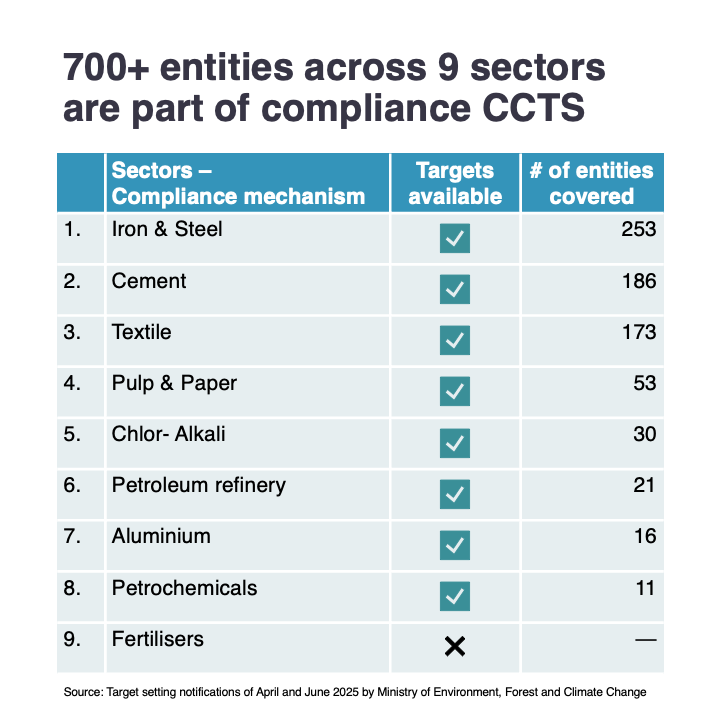
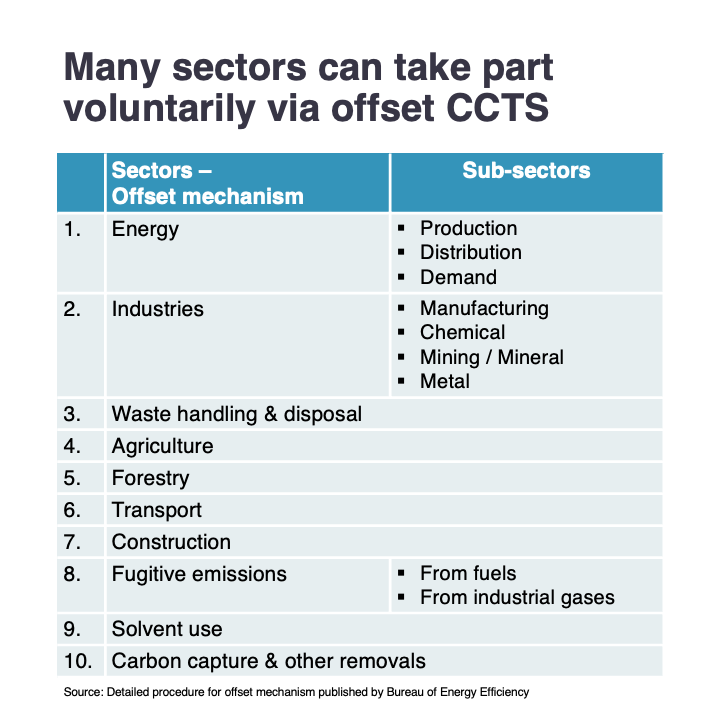

India is gearing up to launch its carbon market, officially called as Carbon Credit Trading Scheme (CCTS) in 2025. This marks a significant step in India’s climate policy landscape and is key instrument to help achieve its Nationally Determined Contributions (NDCs) under the Paris Agreement.
The legal basis for existence of Indian carbon market was paved through an amendment of the Energy Conservation Act in 2022, which empowered the government to specify a carbon trading scheme.
In June 2023, the government released the initial CCTS framework, which was amended in December 2023 to establish both a compliance mechanism and a voluntary offset mechanism. July 2024 saw the release of detailed regulations for the compliance mechanism, and by mid-2025, the government issued rules for the offset mechanism, along with emissions targets for most of the obligated sectors.
While this is India’s first carbon market, many industrial entities are already familiar with market-based instruments. Since 2012, several emission-intensive sectors have been mandatorily participating in Perform, Achieve, and Trade (PAT) scheme, which rewards energy savings with tradable certificates. The new carbon market builds on the design of PAT and will gradually subsume PAT-covered entities.
The Carbon Credit Trading Scheme has two key mechanisms:
The compliance mechanism initially covers 9 emission-intensive sectors – iron & steel, aluminium, cement, fertilisers, chlor-alkali, paper & pulp, petroleum refining, petrochemicals and textile.
Each obligated entity within the covered sectors is assigned an annual emissions intensity target using the financial year 2023 as the baseline. These targets are determined based on sectoral and sub-sectoral decarbonisation trajectories. So far, targets have been issued for the financial years 2025 and 2026, with targets for the fertilisers sector expected to be announced soon.
Entities that exceed their targets must purchase and surrender carbon credit certificates (CCC) to make up the difference. Those that outperform their targets will be issued CCCs, which they can bank or sell via power exchanges.
The emissions to be accounted include scope 1 emissions from fuel combustion and industrial processes, and scope 2 emissions from purchased electricity and heat consumption. For now, the covered greenhouse gases are carbon dioxide (CO₂) and perfluorocarbons (PFCs).
Obligated entities must also submit a long-term emissions reduction action plan (minimum 5 years) within one year of the first compliance period. Additionally, they must annually report planned activities for the upcoming compliance year.
Complementing the compliance mechanism, the offset mechanism opens the door for voluntary participation for sectors not under direct obligation. The idea is to incentivise decarbonisation across the broader economy.
Currently, 10 sectors/activities are eligible for participation – energy, certain industries, waste, agriculture, forestry, transport, construction, fugitive emissions, solvent use, and carbon capture & other removals.
Entities wanting to register their projects will need to prepare and submit project design document which will be open for public to comment, adding an extra layer of transparency and accountability.
The Ministry of Power holds overall responsibility for the Indian Carbon Market and has appointed Bureau of Energy Efficiency (BEE) as the administrator. A National Steering Committee (NSC) has been established to provide oversight and recommendations to BEE on implementation.
As the administrator, BEE is responsible for identifying sectors to be included under both the mechanisms, and for developing emissions intensity targets. These targets are then formally notified by the Ministry of Environment, Forest and Climate Change.
The Grid Controller of India serves as the registry operator, responsible for registrations, maintaining records, and functioning as India’s meta-registry. Meanwhile, the Central Electricity Regulatory Commission will regulate trading activities under the CCTS.
India’s CCTS is another evidence of growing momentum for carbon pricing to reduce emissions – now increasingly driven by countries in the South, including Indonesia, Vietnam, Brazil, and China, which has recently expanded its emissions trading to cover heavy industries.
The urgency to launch own carbon pricing systems is also driven by phase-in timing of the EU’s carbon border adjustment mechanism (CBAM), which puts a carbon levy on imports of emission-intensive goods into the EU. It is pressurising countries to price emissions domestically or else loose carbon revenues to the EU.
However, India will not be able to retain much of carbon revenue at this stage as the initial emission intensity targets are relatively lenient. Consequently, EU importers importing CBAM goods from India would have limited deduction possibility for carbon costs already paid.
Nonetheless, as of now the CCTS provides a critical foundation: it establishes emissions monitoring, reporting and verification (MRV) system which is a prerequisite for building a robust and credible carbon pricing framework.
While the first compliance year of CCTS officially began in April 2025, intensity targets are still to be finalised before implementation can start. With both compliance and offset mechanisms covering nearly all major emitting sectors and activities, India is setting the stage for a comprehensive emissions reduction.